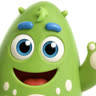
Mon Tableau de Motivation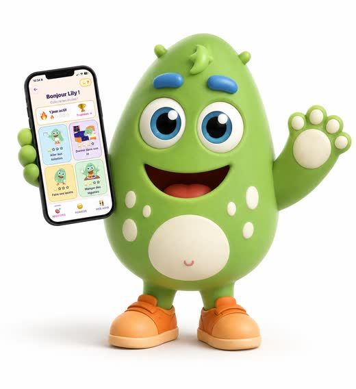
Un tableau de motivation pour les enfants de 3 à 10 ans. Il gagne en autonomie et en confiance, et vous n'avez plus besoin de répéter. Missions, étoiles et récompenses, sur votre téléphone et sur le sien.
Pourquoi cette application existe
Je suis enseignante et maman. Chaque matin, je répétais les mêmes phrases jusqu'à m'énerver à sept heures quarante-cinq, et mon fils, lui, attendait simplement l'ordre suivant.
Alors j'ai fabriqué un tableau pour lui. Il coche ses missions tout seul, il gagne des étoiles, il choisit sa récompense. Ce qui a changé, ce n'est pas qu'il fait ses affaires : c'est sa fierté quand il coche. Et moi, je n'ai plus le mauvais rôle.
Je l'ai développée seule, et des centaines de familles s'en servent aujourd'hui.
Ce que ça change pour lui
Il regarde son tableau et sait ce qu'il lui reste à faire. Il n'attend plus qu'on le lui dise.
Chaque mission cochée est une petite réussite qu'il voit de ses yeux. Jour après jour, il se découvre capable.
Le matin, le soir, les devoirs : il comprend l'ordre des choses et avance à son rythme.
Moins de disputes, moins de cris. Vous ne jouez plus le gendarme : vous êtes là pour le féliciter.
Comment ça marche
56 missions sont déjà prêtes : se brosser les dents, s'habiller seul, mettre la table, faire ses devoirs. Vous activez celles qui vous concernent, et vous ajoutez les vôtres.
Il a son propre espace, avec son prénom. Des images pour les 3-7 ans qui ne lisent pas encore, des points et des niveaux pour les 7-10 ans.
Dans une liste que vous avez faite. Vingt minutes de plus avant le coucher, un dessert, la bibliothèque, aller chez un copain. Rien à acheter.
À quoi ça ressemble
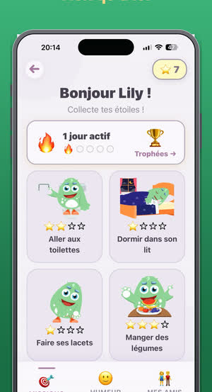
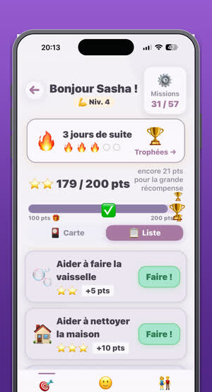
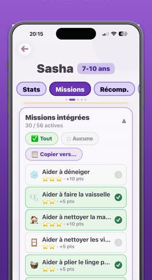
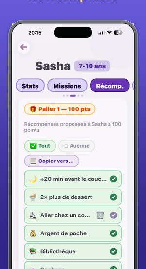
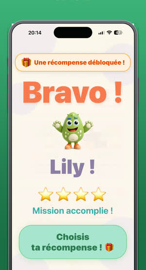
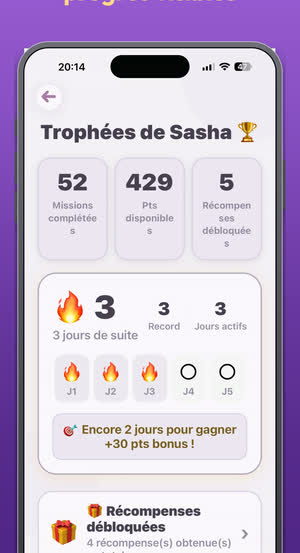
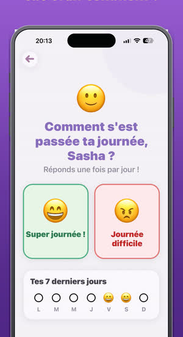
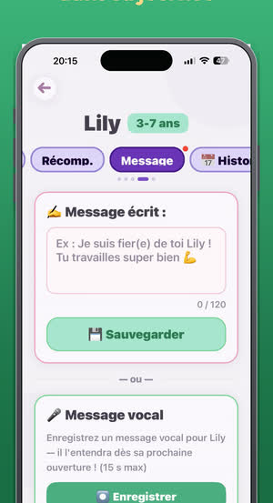
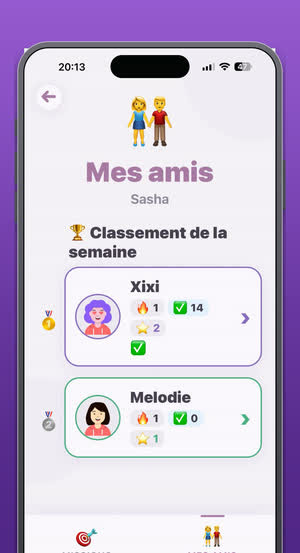
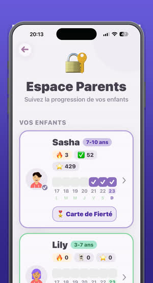
Faites glisser pour voir la suite →
Ce qu'il y a dedans
Des images pour les petits, des points et des niveaux pour les grands. Le tableau évolue au lieu d'être abandonné à huit ans.
Ajoutez ce qui compte chez vous, avec le nombre de points que vous décidez et les jours de la semaine concernés.
Du temps, une sortie, un privilège. Deux paliers, à cent et deux cents points, avec la grande récompense au bout.
Trois jours de suite, puis cinq, puis un bonus. L'enfant voit sa série grandir et ne veut plus la casser.
Le second parent rejoint avec un code et voit les mêmes enfants, sans rien payer de plus. Pratique en garde alternée.
Laissez-lui un message écrit ou vocal. Il le trouve dans son tableau, même si vous rentrez après le coucher.
Une question chaque soir, et un historique sur sept jours. Parfois trois journées difficiles disent ce qu'il n'arrive pas à raconter.
Français, anglais, espagnol, allemand, néerlandais, portugais et arabe. L'enfant dans la langue de l'école, vous dans la vôtre.
Bien démarrer
C'est là que tout se joue. La plupart des tableaux échouent parce qu'on en met trop le premier jour.
Son prénom, son avatar, et sa tranche d'âge : 3-7 ans ou 7-10 ans. C'est elle qui décide de l'écran qu'il verra.
Prenez celles du matin, celles qui vous font répéter. Vous en ajouterez d'autres dans deux semaines, quand les premières seront acquises.
Du temps, une sortie, un privilège. Les récompenses qui coûtent de l'argent s'épuisent vite. Celles qui coûtent de l'attention, non.
Le premier soir, ouvrez l'application ensemble et laissez-le cocher la première mission lui-même. C'est ce moment-là qui déclenche tout.
Espace parent → « Deuxième parent » → Inviter. Un code s'affiche, l'autre parent le saisit, et vous voilà tous les deux sur le même tableau.
Questions fréquentes
Oui, et c'est la question qui revient le plus. Espace parent → la fiche de votre enfant → onglet Missions, tout en bas : « + Nouvelle mission ». Vous choisissez le nom, l'illustration, le nombre de points et les jours concernés. Même chose dans l'onglet Récomp. pour créer vos propres récompenses.
Non. Un seul abonnement couvre toute la famille. Dans l'espace parent, choisissez « Deuxième parent » puis « Inviter » : un code s'affiche. L'autre parent le saisit au même endroit, via « J'ai reçu un code ». Il voit alors les mêmes enfants et gère tout depuis son propre téléphone.
Oui, sur iPad comme sur tablette Android. Beaucoup de familles font exactement ça : le parent sur son téléphone, l'enfant sur la tablette. Tout se synchronise entre les deux.
Plusieurs, chacun avec sa propre tranche d'âge, ses missions et ses récompenses. Un enfant de quatre ans et un de neuf ans n'auront pas du tout le même écran.
Non. L'espace parent est protégé par un code que vous seul connaissez. De son côté, l'enfant ne voit que son tableau, ses missions et ses récompenses.
L'essai est gratuit et sans engagement. Vous pouvez l'arrêter avant la fin depuis les réglages de votre téléphone. Le prix de l'abonnement s'affiche sur la fiche de l'application, dans l'App Store ou le Play Store, dans la monnaie de votre pays.
Écrivez-moi. Je réponds moi-même à tous les messages, en général dans la journée. Beaucoup de situations se règlent en deux phrases, et quand c'est un vrai défaut, je le corrige.
Qui est derrière
Je suis enseignante et maman, et je vis en Suisse. Je n'ai pas d'équipe : je m'occupe de tout seule, les traductions, les mises à jour, et les réponses à vos messages.
Ça veut dire que je suis parfois lente. Mais ça veut dire aussi que quand vous écrivez, c'est moi qui lis.
Alicia
Une question, un problème, une idée
Je lis tout, et je réponds.
Disponible en français, anglais, espagnol, allemand, néerlandais, portugais et arabe.